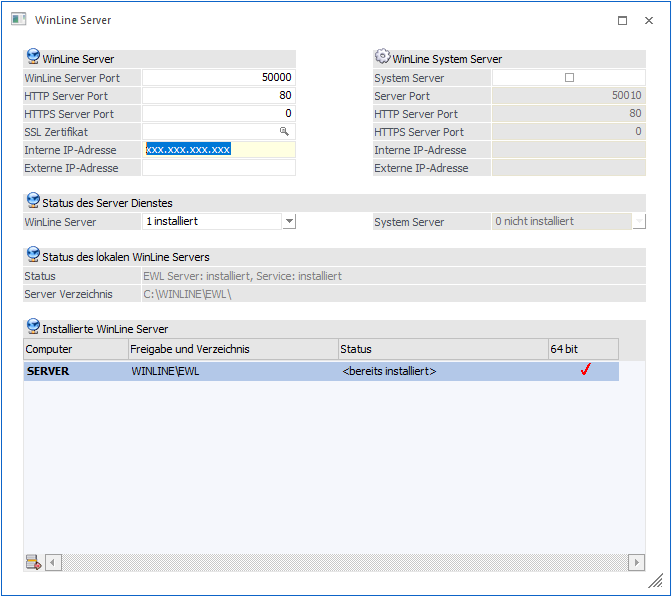
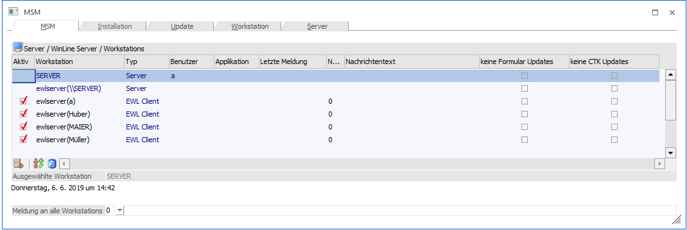

Im Menüpunkt…
1 MSM
1 WinLine Server
… können Einstellungen zum WinLine Server (auch nachträglich) vorgenommen werden. Die hier getroffenen Einstellungen finden sich auch in der Datei "server.config" (die sich im EWL-Verzeichnis befindet) wieder.

Das Einstellungsfenster ist in vier Bereiche aufgeteilt:
ü WinLine Server
ü WinLine System Server
ü Status des Server Dienstes
ü Status des lokalen WinLine Servers
ü Installierte WinLine Server
WinLine Server
In diesem Bereich können die WinLine Server Einstellungen, die bei der Einrichtung des Servers gemacht wurden, nachträglich geändert werden. Sollte der WinLine-Server neu eingerichtet werden (z.B. im Zuge einer Verwendung des WinLine System Servers), müssen hier die entsprechenden Einträge gemacht werden.
Ø WinLine Server Port
Der WinLine Server Port wird programmtechnisch vom Java-Client (Java Applet) verwendet, um auf den WinLine Server zugreifen zu können.
Ø HTTP Server Port
Dieser Port wird dazu verwendet, die WinLine mobile bzw. den WinLine Server über einen Browser (z.B.: Internet-Explorer) anzusurfen. Der WinLine Server wird über den HTTP Server Port angesurft um eine nicht vorhandene bzw. eine neuere/aktuelle Java-Client-Version herunterladen zu können bzw. das Login zu verifizieren. Ab diesem Zeitpunkt kommuniziert der Java-Client über ein WinLine-internes Protokoll mit dem WinLine-Server (über den eingegebenen WinLine Server Port).
Ø HTTPS Server Port
Dieser Port wird dazu verwendet, die WinLine über einen Browser (z.B.: Internet-Explorer) sicher anzusurfen. Der WinLine Server wird anschließend über den HTTPS Server Port (Standardport 443) angesurft. Ab diesem Zeitpunkt kommuniziert der Java-Client über ein WinLine-internes Protokoll mit dem WinLine -Server (über den eingegebenen WinLine Server Port).
Ø SSL-Zertifikat
Im Zuge der WinLine Server-Installation kann das SSL-Zertifikat und der SSL-Port des Systemservers angegeben werden.
Sollte das konfigurierte Zertifikat nicht vorhanden sein, dass ist das Editfeld aktiv und es kann mit der Lupe nach einer .pem-Datei gesucht werden.
Ist die die Datei erstmal hinterlegt und vorhanden, kann diese nachträglich nur noch geändert werden, wenn die Datei "keystore.pem" gelöscht oder mit dem neuen Zeritifkat überschrieben wird.
Ø Status Serverdienst
Hier kann der aktuelle Installationsstatus vom WinLine Server Dienst (Mesonic WinLine Service Manager) verändert werden.
ü 0 nicht installiert
ü 1 installiert
ü 2 installiert und gestartet
Der Serverdienst kann nachträglich entweder deinstalliert, installiert oder gestartet werden. Eine manuelle Installation/Deinstallation ist ebenfalls über mesosvcmanager.exe -i bzw. mesosvcmanager.exe -d möglich. Weitere Möglichkeiten hierzu können mittels Parameter mesosvcmanager.exe -? angezeigt werden.
Status des lokalen WinLine Servers
In diesem Bereich wird der Status des WinLine Servers, des WinLine Service Dienstes, sowie das WinLine Server Verzeichnis angezeigt.
WinLine System Server
Über den so genannten WinLine System Server besteht die Möglichkeit dass man automatisch zu einem definierten WinLine Server verbunden wird. Ein WinLine System Server kann z.B. bei einer Serverfarm verwendet werden. Wenn die maximale Login Anzahl eines WinLine Servers überschritten wurde, wird der nächste installierte WinLine Server verwendet.
Um einen " WinLine System Server" einzurichten muss diese Option aktiviert werden.
Ø WinLine Server Port
Der WinLine Server Port wird programmtechnisch vom Java-Client (Java Applet) verwendet, um auf den WinLine Server zugreifen zu können.
Ø HTTP Server Port
Dieser Port wird dazu verwendet, die WinLine über einen Browser (z.B.: Internet-Explorer) anzusurfen. Der WinLine Server wird über den HTTP Server Port angesurft um eine nicht vorhandene bzw. eine neuere/aktuelle Java-Client-Version herunterladen zu können bzw. das Login zu verifizieren. Ab diesem Zeitpunkt kommuniziert der Java-Client über ein WinLine-internes Protokoll mit dem WinLine-Server (über den eingegebenen WinLine Server Port).
Achtung
Die anzugebenden Ports müssen unterschiedlich zum WinLine-Server sein, falls ein solcher auf dem gleichen Rechner wie der WinLine-System Server läuft.
Handelt es sich beim WinLine-Client um einen WinLine-Server der NICHT gleich dem WinLine-System Server ist, dann müssen diese Ports dahingehend eingerichtet werden, dass sie dem WinLine-System Server entsprechen.
Ø Status Serverdienst
Hier kann der aktuelle Installationsstatus vom WinLine Server Dienst (Mesonic WinLine System Server Service Manager) verändert werden.
ü 0 nicht installiert
ü 1 installiert
ü 2 installiert und gestartet
Serverdienst starten/beenden
Um den Serverdienst zu starten bzw. zu stoppen kann der "Mesonic WinLine Service Manager" verwendet werden. Dieser kann im EWL Verzeichnis durch Ausführen der Datei "mesosvcwnd.exe" mit dem zusätzlichen Parameter "--systemserver" gestartet werden. Dadurch wird das "EWL Mesonic System Server Service Manager"-Symbol im Tray angezeigt.
Ø Installierte WinLine Server
In dieser Tabelle können weitere WinLine Server (Anzahl ist lizenzabhängig) definiert werden.
Ausgehend von der bereits vorhandenen WinLine-Installation können weitere Rechner mit der WinLine Installation "versorgt" werden:
Ø Computer
In diesem Feld muss der Name der Workstation eingegeben werden, auf die die WinLine Server-Dateien kopiert werden sollen. Durch Drücken der F9-Taste kann nach allen Workstations (und Freigaben), die aktiv im Netzwerk sind, gesucht werden.
Ø Freigabe und Verzeichnisse
Hier muss die Freigabe und das Verzeichnis angegeben werden in die die WinLine Server-Dateien kopiert werden sollen. Durch Drücken der F9-Taste kann nach allen Freigaben gesucht werden.
Hinweis
Nachdem es für WinLine-Server notwendig ist, diese als WinLine-Clients einzurichten, sollten die entsprechenden Freigaben bereits vorhanden sein!
Ø Status
In diesem Feld wird der Status der aktuellen Zeile angezeigt. Z.B. dass der WinLine-Server bereits installiert ist, oder die Freigabe nicht gefunden wurde, oder dass es sich um einen neuen Eintrag handelt.
Buttons
Ø OK
Mit dem OK-Button werden Änderungen gespeichert bzw. durchgeführt (Einrichtung weitere WinLine-Server). Wurden in der Tabelle neue WinLine-Server hinzugefügt, so wird nach Drücken des OK-Buttons pro EWL-Server ein Eintrag in die MSM-Tabelle gemacht (nicht zuletzt um im Zuge von Updates die entsprechenden Dateien dorthin kopieren zu können). Der Eintrag dafür lautet "ewlserver(\\Computername)" und ist ein "MSM-Typ" 6 = EWL Server.

Ø Ende
Durch Drücken des Ende-Buttons wird das Fenster geschlossen. Nicht gespeicherte Änderungen gehen dabei verloren.
Zusammenfassung WinLine-Server / WinLine System-Server - Dienste und Dateien:
ü der WinLine Server (mesoserver.exe) protokolliert in die Datei "mesoserver.log" und erhält seine Konfiguration aus der Datei "server.config".
ü der WinLine System Server (mesosysserver.exe) protokolliert in die Datei "mesosysserver.log" und erhält seine Konfiguration ebenfalls aus der Datei "server.config"
ü der Dienst (mesosvcmanager.exe) stellt die Anwendung für beide Dienste dar wobei der WinLine System Server mit dem Startparameter "--systemserver" verwaltet wird.
ü für den WinLine-Server lautet der Dienst "Mesonic WinLine Service Manager" und das Protokoll dazu wird in die Datei "mesosvcmgr.log" geschrieben.
ü für den WinLine-System Server lautet der Dienst "Mesonic WinLine System Server Service Manager" und das Protokoll dazu wird in die Datei "mesosystemsvcmanager.log" geschrieben.
ü die "TrayApplikation" (mesosvcwnd.exe) wird für beide Dienste ("Mesonic WinLine Service Manager" und Mesonic "WinLine System Server Service Manager") verwendet wobei das Ziel der Anwendung mit einem Parameter bestimmt wird. Der WinLine System Server wird dabei mit dem Startparameter "--systemserver" verwaltet.